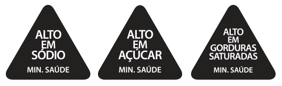

O TEMPO
ESTÁ ACABANDO:
PRECISAMOS
DA SUA AJUDA.
O TEMPO ESTÁ ACABANDO:
PRECISAMOS DA SUA AJUDA.
PARTICIPE AGORA DA CONSULTA PÚBLICA DA ANVISA E EXIJA O ALERTA DOS TRIÂNGULOS
PARTICIPE AGORA DA CONSULTA PÚBLICA DA ANVISA E EXIJA O ALERTA DOS TRIÂNGULOS
A CONSULTA PÚBLICA SOBRE
ROTULAGEM NUTRICIONAL ESTÁ ABERTA
A CONSULTA PÚBLICA SOBRE
ROTULAGEM NUTRICIONAL ESTÁ ABERTA
Em setembro, a Anvisa finalmente abriu a consulta pública sobre rotulagem nutricional para que toda a população possa contribuir nesse debate. Agora, é a sua vez de opinar e sugerir aprimoramentos à proposta apresentada pela agência.
Após o término da consulta, será feita uma análise das contribuições e então será definido o novo modelo de rotulagem nutricional para o Brasil. Esse é o momento de mostrar que queremos saber o que comemos e de apoiar a rotulagem em formato de triângulos.
O que é uma consulta pública?
É o momento em que a Anvisa
abre suas decisões ao público, dando
a oportunidade de todos contribuírem com suas percepções e opiniões
sobre um determinado assunto.
Em setembro, a Anvisa finalmente abriu a consulta pública sobre rotulagem nutricional para que toda a população possa contribuir nesse debate. Agora, é a sua vez de opinar e sugerir aprimoramentos à proposta apresentada pela agência.
Após o término da consulta, será feita uma análise das contribuições e então será definido o novo modelo de rotulagem nutricional para o Brasil. Esse é o momento de mostrar que queremos saber o que comemos e de apoiar a rotulagem em formato de triângulos.
O que é uma consulta pública?
É o momento em que a Anvisa
abre suas decisões ao público, dando
a oportunidade de todos contribuírem com suas percepções e opiniões
sobre um determinado assunto.
QUER SABER COMO FUNCIONA A CONSULTA E COMO PARTICIPAR?
ASSISTA AO VÍDEO:
QUER SABER COMO FUNCIONA A CONSULTA E COMO PARTICIPAR?
ASSISTA AO VÍDEO:
OU SIGA O PASSO A PASSO ABAIXO!
OU SIGA O PASSO A PASSO ABAIXO!
Ao acessar o formulário, leia atentamente o texto de introdução. Em seguida, preencha os primeiros campos da página com suas informações pessoais.
Ao acessar o formulário, leia atentamente o texto de introdução. Em seguida, preencha os primeiros campos da página com suas informações pessoais.
Feito isso, é hora de dizer como você gostaria de contribuir. No campo “Pesquisa preliminar”, selecione a primeira opção para uma contribuição simplificada.
Feito isso, é hora de dizer como você gostaria de contribuir. No campo “Pesquisa preliminar”, selecione a primeira opção para uma contribuição simplificada.

Ao deixar a sua opinião, você responderá a algumas perguntas e poderá fazer comentários gerais. Nesse ponto, você pode explicar porque o formato de triângulos é a melhor opção de rotulagem nutricional frontal. É importante dizer também que quanto menor o prazo de implementação do novo modelo, mais rapidamente teremos os rótulos frontais nas embalagens dos alimentos.
Ao deixar a sua opinião, você responderá a algumas perguntas e poderá fazer comentários gerais. Nesse ponto, você pode explicar porque o formato de triângulos é a melhor opção de rotulagem nutricional frontal. É importante dizer também que quanto menor o prazo de implementação do novo modelo, mais rapidamente teremos os rótulos frontais nas embalagens dos alimentos.
Após isso, você pode indicar se considera que a atualização das normas de rotulagem trará impactos negativos ou positivos. É importante reforçar os impactos positivos para a saúde dos brasileiros e a importância que a rotulagem adequada tem para ajudar a conter os índices crescentes de doenças crônicas não transmissíveis relacionadas ao consumo excessivo de alimentos não saudáveis.
Após isso, você pode indicar se considera que a atualização das normas de rotulagem trará impactos negativos ou positivos. É importante reforçar os impactos positivos para a saúde dos brasileiros e a importância que a rotulagem adequada tem para ajudar a conter os índices crescentes de doenças crônicas não transmissíveis relacionadas ao consumo excessivo de alimentos não saudáveis.
Pronto.
Agora, para finalizar, responda as perguntas de avaliação e certifique-se de clicar em gravar.
Pronto.
Agora, para finalizar, responda as perguntas de avaliação e certifique-se de clicar em gravar.